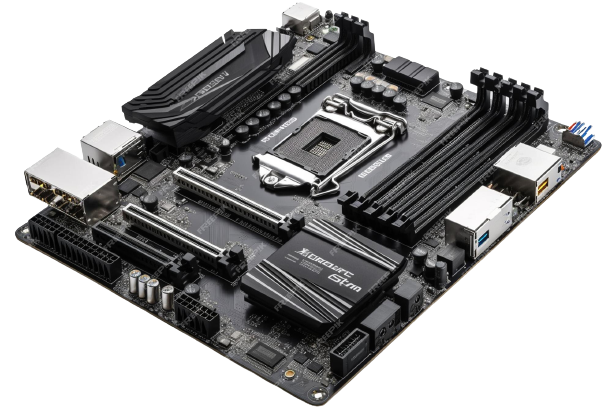
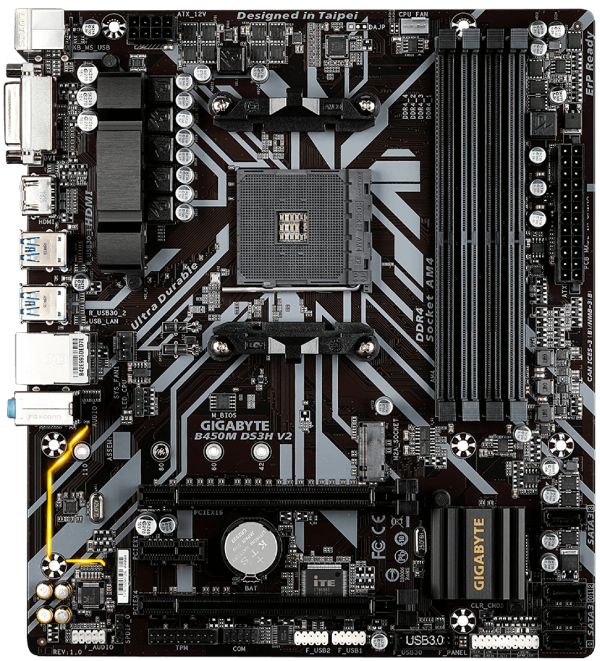

O que é o socket?
Os sockets são interfaces na placa-mãe onde o processador (CPU) se encaixa. A AMD e a Intel têm suas próprias séries de sockets.
AMD: Os sockets mais comuns para processadores AMD incluem o AM4 e o TR4 (Threadripper). Cada socket tem um número específico de pinos e é compatível com determinadas famílias de processadores AMD.
Intel: A Intel usa vários sockets, como LGA 1200 e LGA 2066 para desktops e LGA 3647 para servidores. Assim como a AMD, cada socket Intel é projetado para acomodar diferentes tipos de processadores.
É importante escolher uma placa-mãe com o socket correto para o processador que você pretende usar, pois eles não são compatíveis entre si. Certifique-se de verificar as especificações do processador e da placa-mãe para garantir que eles sejam compatíveis em termos de socket e chipset.


 Desvendando a Tecnologia
Desvendando a Tecnologia